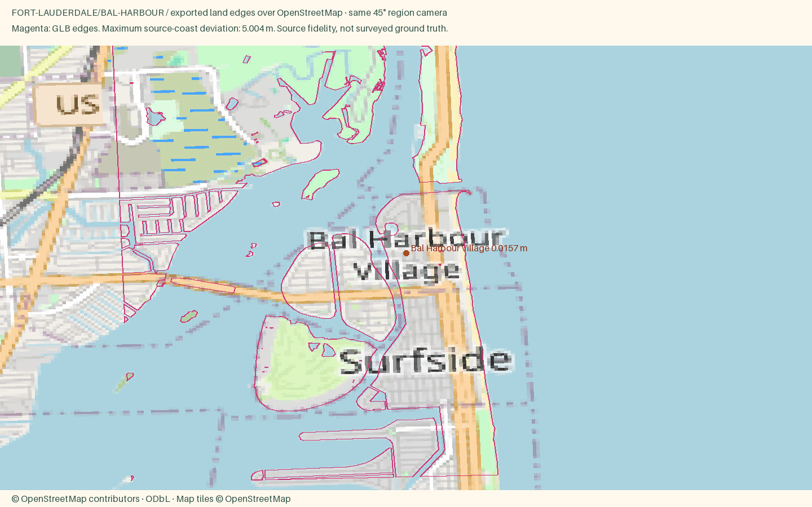

Bal Harbour Village
Open atlas · Accuracy CSV · Sourced medians
Region
Bal Harbour Village
Open districtA tiny oceanfront village at the north tip of Miami Beach, known for a luxury shopping center and a quiet beach path.
Source alignment

Manual fixes
- District palettes were selected editorially from local or regional character references; these colors are not a surveyed facade inventory.
- Bal Harbour source uses the OSM name Bal Harbour Village; the existing public town ID is retained.
- Fort Lauderdale downtown uses its glass recipe; surrounding canal homes use the prepared canal-villa recipe.
- Source building windows for Fort Lauderdale, Hollywood, Hallandale and Dania extend east to the beachfront.
- Existing Census land context continues beyond the OSM data rectangle, avoiding artificial water edges at the package boundary.